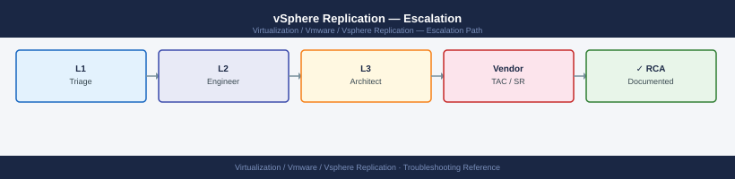

vSphere Replication — Escalation¶

Before you begin¶
- Access required: VRA VAMI admin access (
https://<vra-ip>:5480) on both sites; SSH root access to ESXi source hosts; vCenter admin access on both sites; Broadcom support account at support.broadcom.com with active vSphere Replication entitlement - Bundles from BOTH sites are required — GSS will ask for the protected-site VRA bundle and the recovery-site VRA bundle in their first response. Collect them immediately before any state changes
- Do NOT restart the VRA appliance without GSS direction — VRA restart during an active replication may cause the VMs to go into a "Not Configured" state that requires re-seeding
- If SRM is also involved: open a single VMware Support case (SRM and VR teams collaborate internally) and include SRM bundles from both sites in addition to VRA bundles
Pre-Escalation Self-Check¶
Run these before opening the case.
| Check | Where to look | Expected result |
|---|---|---|
| VR version | VRA VAMI → Summary → Version | Note full VR version + build |
| VRA appliance status | VRA VAMI → Summary → Services | All services Running |
| Site pair status | vSphere Client → Site Recovery → Sites | Site pair Connected |
| Replication status | vSphere Client → Site Recovery → Replications | All replications OK; no RPO violations |
| RPO trend | vSphere Client → Site Recovery → Replications → each VM | RPO trend not increasing |
| vCenter connectivity | VRA VAMI → Configuration → vCenter Server | vCenter Connected |
| ESXi hbr.log | SSH to source ESXi: tail -100 /var/log/hbr.log |
No repeated error entries |
| VR version at recovery site | Recovery site VRA VAMI → Summary | Matches protected-site VR version |
Step-by-Step Data Collection¶
1. Get the VR version and VRA status¶
- Browse to the protected-site VRA VAMI at
https://<vra-protected-ip>:5480. - Click Summary → note the VR version and build number.
- Click Services → note which services are Running and which (if any) are Stopped.
- Repeat on the recovery-site VRA (
https://<vra-recovery-ip>:5480).
2. Generate the VRA support bundle (both sites)¶
- In the VRA VAMI: click Support → Download Support Bundle.
- Wait 3–10 minutes for the bundle to generate.
- Download the resulting archive.
Repeat this on BOTH the protected-site and recovery-site VRA appliances.
# Alternative: generate via VRA CLI (SSH to VRA)
ssh root@<vra-ip>
# Trigger support bundle generation
/etc/rc3.d/*vrms/scripts/vr-support.sh
# Bundle is written to /tmp/
ls -lh /tmp/vr-support*.zip
root@vra-prod-01:~# /etc/rc3.d/*vrms/scripts/vr-support.sh
Generating VMware vSphere Replication support bundle...
Collecting system logs...
Collecting replication statistics...
Collecting configuration data...
Support bundle generation completed successfully.
Bundle saved to: /tmp/vr-support-2024-01-15-143022.zip
root@vra-prod-01:~# ls -lh /tmp/vr-support*.zip
-rw-r--r-- 1 root root 287M Jan 15 14:30 /tmp/vr-support-2024-01-15-143022.zip
Common errors
bash: /etc/rc3.d/*vrms/scripts/vr-support.sh: No such file or directory — Verify the correct VRA version path with find /etc -name "vr-support.sh" 2>/dev/null and adjust the script location accordingly.
Permission denied — Ensure you are logged in as root or have sudo privileges; if using a non-root account, prepend sudo to the command.
/tmp: No space left on device — Free up disk space on the VRA appliance with rm -rf /tmp/vr-support*.zip to remove old bundles, or increase the /tmp partition size.
3. Collect ESXi replication logs from the source host¶
# SSH to the source ESXi host as root
ssh root@<source-esxi-ip>
# VR host-based log (shows per-VM replication traffic at the ESXi level)
tail -300 /var/log/hbr.log | grep -i "error\|fail\|exception\|warn"
# Host daemon log (general ESXi host operations)
tail -200 /var/log/hostd.log | grep -i "replication\|vr\|hbr"
# Copy log off the host
scp root@<source-esxi-ip>:/var/log/hbr.log /tmp/hbr-$(hostname).log
root@esxi-prod-01:~# tail -300 /var/log/hbr.log | grep -i "error\|fail\|exception\|warn"
2024-01-15T09:47:23.456Z warn hbr[2048]: [vm-123] Replication lag detected: 2.5 GB pending
2024-01-15T09:52:18.891Z error hbr[2048]: [vm-456] Failed to send checkpoint: Connection timeout to vSphere Replication Server
2024-01-15T10:01:05.234Z warn hbr[2048]: [vm-789] Network bandwidth throttled to 50 Mbps
2024-01-15T10:15:42.567Z error hbr[2048]: [vm-123] Exception during snapshot creation: Insufficient storage on replica datastore
root@esxi-prod-01:~# tail -200 /var/log/hostd.log | grep -i "replication\|vr\|hbr"
2024-01-15T09:45:12.123Z info hostd[1024]: HBR agent initialized successfully
2024-01-15T09:46:33.456Z info hostd[1024]: Replication task started for vm-123 (UUID: 50123456-abcd-ef01-2345-6789abcdef01)
2024-01-15T10:02:47.789Z warn hostd[1024]: vSphere Replication Server heartbeat delayed by 3.2 seconds
2024-01-15T10:18:55.012Z info hostd[1024]: Replication checkpoint completed: 847 MB transferred
root@esxi-prod-01:~# scp root@192.168.1.45:/var/log/hbr.log /tmp/hbr-esxi-prod-01.log
hbr.log 100% 2847KB 4.2MB/s 00:00
Common errors
Permission denied (publickey,password). — Verify SSH credentials and that root login is enabled on the ESXi host via DCUI or vSphere Client.
No such file or directory — Confirm the ESXi host is running vSphere Replication Agent; if not installed, deploy it from the vSphere Replication appliance.
Connection refused — Ensure the source ESXi host is reachable on the network and SSH service is running (check firewall rules and host connectivity).
4. Export vCenter system logs¶
In vSphere Client: 1. Navigate to the vCenter → Actions → Export System Logs. 2. Select all components. 3. Export and download.
Repeat on the vCenter at the recovery site.
5. Capture replication status¶
In vSphere Client at both sites: 1. Navigate to Site Recovery → Replications. 2. Take a screenshot showing the replication status of all VMs at the time of the issue. 3. Note which VMs are in Error, RPO Violation, or any state other than OK.
6. Write the timeline¶
VR version: 8.8.0 build XXXXXXXX (protected site)
VR version: 8.8.0 build XXXXXXXX (recovery site)
vCenter (protected): vcenter-prod.corp.local (vSphere 8.0.2)
vCenter (recovery): vcenter-dr.corp.local (vSphere 8.0.2)
Issue first observed: 2026-06-14 08:00 UTC
Last confirmed replication: 2026-06-14 06:00 UTC
Changes in 24h before the issue:
- 07:00: vSphere 8.0.1 to 8.0.2 upgrade completed on protected-site vCenter
- 08:00: All 200 VMs show "Not Configured" replication status
- 08:10: VRA VAMI at protected site shows vCenter connection: Disconnected
Steps already taken:
- VRA VAMI: vCenter server shows disconnected despite correct credentials
- vSphere Client: site pair shows "Not Configured" (was Connected before upgrade)
- Did NOT restart VRA or reconfigure the site pair
Blast radius: All 200 VMs no longer replicating; DR capability at risk
SRM involvement: SRM 8.8 paired at both sites; SRM SR opened in parallel (case XXXXXXX)
How to Open the SR on support.broadcom.com¶
-
Go to support.broadcom.com and sign in with your Broadcom account.
-
Click Open a Support Request.
-
Under Product Group, select VMware Cloud Foundation and Virtualization → VMware vSphere Replication.
-
Under Version, select your VR version from Step 1.
-
Under Severity, select:
- Severity 1 — Critical: Active DR recovery operation is failing; VMs cannot be started at the recovery site; data is at immediate risk; no workaround
- Severity 2 — High: All replications are stopped; DR capability is degraded; no active recovery in progress; data at risk if replication is not restored
- Severity 3 — Medium: A subset of VMs are in RPO violation; single VR configuration issue; workaround exists
-
Severity 4 — Low: General how-to question, pre-upgrade planning, minor UI issue
-
In the Summary field: product + symptom + scope. Example:
vSphere Replication 8.8 — all 200 VMs show Not Configured after protected-site vCenter upgrade 8.0.1 to 8.0.2, VRA vCenter connection lost. -
In the Description field, paste:
- VR versions from both sites (Step 1)
- VRA service status from Step 1
- The key error from Step 3 (hbr.log or VAMI message)
- The timeline from Step 6
-
Include the SRM case number if a parallel SRM case is open
-
Under Attachments, upload:
- VRA support bundles from BOTH sites (Step 2)
- ESXi hbr.log from the source host (Step 3)
-
vCenter system logs from both sites (Step 4)
-
Click Submit. You will receive a case number by email immediately.
-
Severity 1 only: call Broadcom/VMware support after submission:
- North America: +1 877-486-9273 (24×7 for Severity 1)
- EMEA: +44 (0)3453 700 100
- State "Severity 1 — vSphere Replication — active recovery failing, DR capability lost" at the start of the call.
Escalation Path¶
Step 1 — Open case at support.broadcom.com with both-site VRA bundles and ESXi hbr.log
↓
Step 2 — T1 support engineer acknowledges (Sev1: < 30 min; Sev2: < 2 hr)
↓
Step 3 — If no meaningful progress in 30 minutes for Sev1 or 2 hours for Sev2:
→ Reply in case: "Requesting escalation to vSphere Replication Senior Engineer"
→ State: "[all replications down / active recovery failing / DR capability lost]"
↓
Step 4 — VR T2 Senior Engineer is assigned
→ They will review hbrsrv.log and the site-pair configuration
→ Have VRA SSH access and vCenter credentials for both sites ready
↓
Step 5 — If the issue is specific to the SRM + VR integration:
→ VMware handles SRM and VR under the same case (they coordinate internally)
→ Include the SRM recovery plan log in the case if SRM is also affected
↓
Step 6 — For Sev1 with active recovery failing, unresolved after 2 hours:
→ Request CritSit escalation; contact your Broadcom TAM or Account Executive
What NOT to Do¶
| Do NOT do this | Why | What to do instead |
|---|---|---|
| Restart the VRA appliance without GSS direction | VRA restart during an active or broken replication can push VMs into "Not Configured" state, requiring full re-seeding | Let GSS review VRA logs before any appliance restart |
| Configure new replications during the investigation | Adding new replications changes the VRA state and configuration GSS is analysing | Freeze all replication configuration changes until the case is resolved |
| Remove and re-add the SRM site pairing | Breaks the SRM to VR integration state; requires full re-configuration which takes hours | Only un-pair if GSS explicitly directs you to after reviewing the pair configuration |
| Reconfigure ESXi vmkernels (vSAN, management, VR vmk) | Changes the network topology VR uses for replication traffic; disrupts active replications | Freeze all vmkernel changes during the incident |
| Power off VMs at the protected site while GSS is diagnosing | Changes the replication state GSS is tracking; may force recovery site VMs into an inconsistent snapshot state | Hold all VM power operations at the protected site until GSS advises |
| Run vSphere Replication re-configure on an already-broken replication | Changes the seed state for that VM; GSS may need the original seed data for recovery | Leave all existing replications in their current state; let GSS direct any re-seed |
Useful Commands for Case Updates¶
# SSH to the VRA appliance as root — paste into every case update
# VR appliance service status
service vmware-vrms status
service vmware-h4 status
# VRA server log (orchestration, site-pair, RPO tracking)
tail -200 /var/log/vmware/hbrsrv/hbrsrv.log | grep -i "error\|fail\|exception"
vmware-vrms is running.
vmware-h4 is running.
2024-01-15 14:32:18.445 [pool-12-thread-4] ERROR com.vmware.hbr.server.replication.RpoTracker - RPO threshold exceeded for site-pair 'prod-to-dr': current RPO 3245s > configured 1800s
2024-01-15 14:28:52.112 [pool-8-thread-2] WARN com.vmware.hbr.server.sync.SyncManager - Replication lag detected for VM 'web-prod-01': 2847 MB pending
2024-01-15 14:15:33.667 [pool-5-thread-1] ERROR com.vmware.hbr.server.connection.SitePairManager - Failed to authenticate with remote VRA at 10.42.18.55: javax.net.ssl.SSLHandshakeException: PKIX path validation failed
2024-01-15 14:02:19.334 [pool-3-thread-6] EXCEPTION com.vmware.hbr.server.storage.SnapshotManager - Unable to create snapshot on datastore 'ds-repl-01': No space left on device
2024-01-15 13:58:44.221 [pool-11-thread-9] ERROR com.vmware.hbr.server.network.Heartbeat - Heartbeat timeout from peer VRA (site-pair UUID: a7f2c1d8-9e4b-42a1-8c3f-5b6d2e9a1f4c)
Common errors
Failed to authenticate with remote VRA at <IP>: javax.net.ssl.SSLHandshakeException: PKIX path validation failed — Regenerate and re-exchange SSL certificates between VRA appliances using the vSphere Replication management interface or re-pair the sites.
Unable to create snapshot on datastore: No space left on device — Expand the replication datastore capacity or reduce the number of concurrent replications to free up storage space.
Heartbeat timeout from peer VRA — Verify network connectivity between VRA appliances on port 31031 and check firewall rules; restart vmware-h4 service if connectivity is confirmed.
# SSH to the source ESXi host as root
# Per-VM replication status at host level
tail -200 /var/log/hbr.log | grep -i "error\|fail"
# Replication vmkernel (ensure VR vmk is present)
esxcli network ip interface list | grep -i "replication\|hbr"
2024-01-15T09:47:23.456Z [ERROR] Replication of vm-prod-db-01 failed: Connection timeout to replica host 192.168.100.45
2024-01-15T09:48:12.789Z [WARN] Checkpoint for vm-web-02 delayed by 2.5 minutes
2024-01-15T09:49:01.234Z [ERROR] Failed to replicate snapshot: Insufficient space on replica datastore (2.1 GB required, 1.8 GB available)
2024-01-15T09:50:44.567Z [ERROR] Authentication failed for replica host: Invalid credentials for user 'root@vsphere.local'
Name IPv4 Address IPv6 Address MAC Address MTU Enabled Portset VDS
vmk1 192.168.100.10 ::1 00:50:56:c0:00:01 1500 true vSphere Replication vds-prod
vmk2 192.168.101.15 fe80::1 00:50:56:c0:00:02 1500 true Management vds-mgmt
Common errors
tail: cannot open '/var/log/hbr.log' for reading: No such file or directory — Verify vSphere Replication is installed on the ESXi host by checking the VR extension in vCenter or reinstall the VR agent.
Name IPv4 Address IPv6 Address MAC Address MTU Enabled Portset — If no replication vmkernel is listed, create a dedicated vmk interface tagged for vSphere Replication traffic in vCenter's host networking configuration.
Support SLA Reference¶
| Severity | Definition | Initial Response SLA |
|---|---|---|
| Sev 1 — Critical | Active DR recovery failing; DR capability lost; data at risk | < 30 min (24×7) |
| Sev 2 — High | All replications down; DR capability degraded; no active recovery | < 2 hours (24×7) |
| Sev 3 — Medium | Subset of VMs in RPO violation; single VR config issue; workaround exists | < 8 hours |
| Sev 4 — Low | How-to, planning, compatibility question, minor issue | Next business day |
See also¶
Verify resolution¶
- In vSphere Client → Site Recovery → Sites: site pair shows Connected
- Check Replications: all replications show OK with no RPO violations
- Confirm the RPO trend is decreasing (data is flowing from protected to recovery site)
- Verify on the VRA VAMI at both sites: all services show Running; vCenter connection shows Connected
- Run
tail -50 /var/log/hbr.logon the source ESXi and confirm no error entries - Monitor for 30 minutes to confirm all VMs maintain their replication and RPO stays within policy